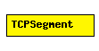

File: Transport/TCP/TCPSegment.msg
C++ definition: click here
Represents a TCP segment, to be used with the TCP module.
TCP header fields not explicitly modelled:
cMessage::kind() may be set to an arbitrary value: TCP entities will ignore it and use only the header fields (synBit, ackBit, rstBit).
The following diagram shows part of the inheritance hierarchy. Unresolved types are missing from the diagram. Click here to see the full picture.
| cMessage | (unknown -- not in documented files) |
| Name | Value | Description |
|---|---|---|
| omitGetVerb | true | |
| customize | true |
| Name | Type | Description |
|---|---|---|
| srcPort | short | |
| destPort | short | |
| sequenceNo | unsigned int | |
| ackNo | unsigned int | |
| urgBit | bool | URG: urgent pointer field significant if set |
| ackBit | bool | ACK: ackNo significant if set |
| pshBit | bool | PSH: push function |
| rstBit | bool | RST: reset the connection |
| synBit | bool | SYN: synchronize seq. numbers |
| finBit | bool | FIN: no more data from sender |
| window | unsigned long | |
| urgentPointer | unsigned long | |
| payloadLength | int | |
| payload | TCPPayloadMessage[] | Message objects (cMessages) that travel in this segment as data. (This field is used only with TCPMsgBasedSendQueue/RcvQueue and not with TCPVirtualBytesSendQueue/RcvQueue.) Every message object is put into the TCPSegment that would (in real life) carry its last octet. That is, if message object 'msg' with length=100 bytes occupies sequence number range 10000..10099, it will travel in the TCPSegment which carries the octet 10099. This way it is easily achieved that the receiving TCP passes up the message object to its client when the last byte of the message has arrived. |
message TCPSegment extends cMessage { properties: omitGetVerb = true; customize=true; fields: // Source Port short srcPort; // Destination Port short destPort; // Sequence Number: first sequence number of the first data octet // in the respective segment (except if SYN is set; then the the // seq. number is the initial seq. number (ISS) and the first data // octet is ISS+1) unsigned int sequenceNo; // Acknowledgement Number: if ACK flag is set, this field contains // the next sequence number the sender of this segment is expecting // to receive unsigned int ackNo; bool urgBit; // URG: urgent pointer field significant if set bool ackBit; // ACK: ackNo significant if set bool pshBit; // PSH: push function bool rstBit; // RST: reset the connection bool synBit; // SYN: synchronize seq. numbers bool finBit; // FIN: no more data from sender // Window: the number of data octets beginning with the one indicated // in the acknowledgement field which the sender of this segment is // willing to accept unsigned long window; // Urgent Pointer: communicates the current value of the urgent pointer // as a positive offset from the sequence number in this segment. The // urgent pointer points to the sequence number of the octet following // the urgent data. This field is only be interpreted in segments with // the URG control bit set. unsigned long urgentPointer; // Payload length in octets (not an actual \TCP header field). // This may not always be the same as encapsulatedPacket()->length()*8; // e.g. when simulating a virtual data stream there's no encapsulated // packet at all. int payloadLength; // Message objects (cMessages) that travel in this segment as data. // (This field is used only with TCPMsgBasedSendQueue/RcvQueue and // not with TCPVirtualBytesSendQueue/RcvQueue.) Every message object // is put into the TCPSegment that would (in real life) carry its // last octet. That is, if message object 'msg' with length=100 bytes // occupies sequence number range 10000..10099, it will travel in the // TCPSegment which carries the octet 10099. This way it is easily achieved // that the receiving TCP passes up the message object to its client // when the last byte of the message has arrived. abstract TCPPayloadMessage payload[]; };